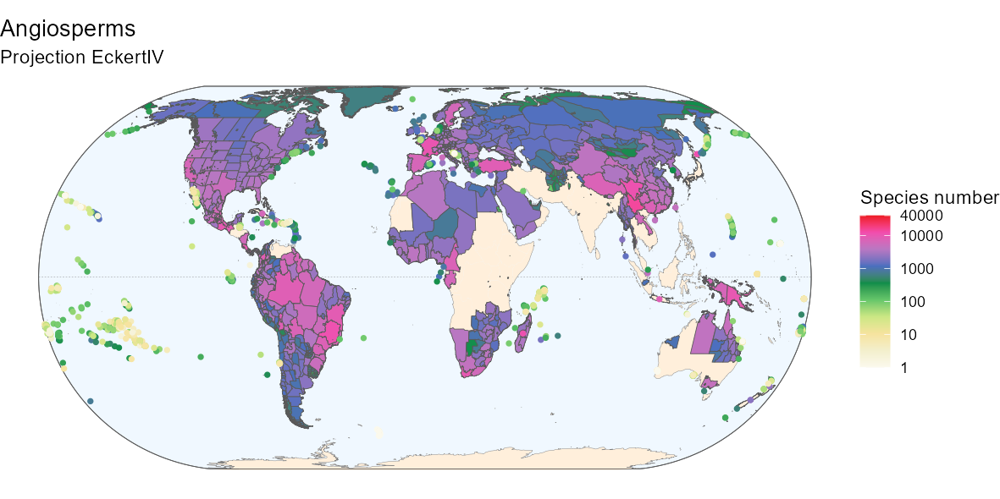

The Global Inventory of Floras and Traits (GIFT) is a database of
floras and plant checklists, distributed worldwide. It also includes
trait and phylogenetic information. The GIFT R package grants an access
to the GIFT database.
This vignette illustrates the most common
uses of the package with detailed examples.
- Retrieving plant checklists within a given area (example:
Mediterranean)
- Getting the distribution of a plant species
- Retrieving trait information for a subset of plant species
- Retrieving environmental information for a list of
polygons/regions
- Retrieving a plant phylogeny and plotting a trait coverage on it
The following R packages are required to build this vignette:
library("GIFT")
library("dplyr")
library("ggplot2")
library("sf")
library("rnaturalearth")
library("rnaturalearthdata")
library("tidyr")
library("patchwork")1. Checklists for a region
1.1. Shapefile
Let’s assume we are interested in having a floristic knowledge of the
western part of the Mediterranean basin. For this purpose, we can simply
use a shape file of the region of interest and feed it to the
GIFT_checklists() function.
We do provide a shape file of this region in the GIFT R
package, which you can access using the
data("western_mediterranean") command.
data("western_mediterranean")
world <- ne_coastline(scale = "medium", returnclass = "sf")
world_countries <- ne_countries(scale = "medium", returnclass = "sf")
# Fixing polygons crossing dateline
world <- st_wrap_dateline(world)
world_countries <- st_wrap_dateline(world_countries)
# Eckert IV projection
eckertIV <-
"+proj=eck4 +lon_0=0 +x_0=0 +y_0=0 +ellps=WGS84 +datum=WGS84 +units=m +no_defs"
ggplot(world) +
geom_sf(color = "gray50") +
geom_sf(data = western_mediterranean, fill = "darkblue", color = "black",
alpha = 0.5, size = 1) +
labs(title = "Western Mediterranean basin") +
lims(x = c(-20, 20), y = c(24, 48)) +
theme_void()
Please note that shapes used in GIFT are unprojected
(Geographic Coordinate System WGS84), and that all shapefiles
provided should be in this CRS. You can check the coordinate
reference system of a sf object by using sf::st_crs().
1.2. Main arguments
Now that we have a shape for the region of interest, let’s call
GIFT_checklists(). This wrapper function has many
arguments, which we detail in this subsection.
First, the taxonomic
group of interest. We may be interested in a particular group of plants,
say only Angiosperms. In this case, we would set the
taxon_name argument like this
taxon_name = "Angiospermae". If we are interested in a
particular family of plants, let’s say orchids, then
taxon_name = "Orchidaceae".
To see all the options for
the taxon_name argument, you can run the
GIFT_taxonomy() function and look at the
taxon_name column of its output.
Along with this first
argument comes complete_taxon. This argument, set to TRUE
by default, determines whether only regions represented by checklists in
GIFT that completely cover the taxon of interest should
be retrieved. Figure 1 illustrates the principle.

Figure 1. Principle of the complete_taxon argument
In Figure 1, we want to retrieve checklists of Angiosperms. In
the first available region, region A, only one checklist is of interest.
This checklist is then always retrieved. In region B, there is only one
checklist of orchids, which is only a subset of Angiosperms. If
complete_taxon is set to TRUE, then this
checklist won’t be retrieved, otherwise yes. Finally, in region C, there
is a checklist for vascular plants and one for orchids. In both cases,
the checklist of vascular plants will be retrieved after filtering out
the non-angiosperm species. The checklist of Orchids is also retrieved
in both cases because it is not the only one available and because it
can complete the floristic knowledge for Angiosperms in this region.
The following arguments of GIFT_checklists()
refer to the floristic status of plant species. For example, we may be
interested only in endemic or naturalized species. The default value is
to get all native species.
Similarly, two arguments are needed in
the function. First, floristic_group defines the group of
interest. Second, complete_floristic indicates whether or
not to retrieve incomplete regions with respect to the selected
floristic group. The logic is detailed in Figure 2 and is similar to the
complete_taxon argument shown above
Figure 2. Principle of the complete_floristic argument
The next set of arguments relate to the spatial match between the
desired area and the GIFT database.
The main argument in this regard, when providing a shapefile or a set
of coordinates, is the overlap argument. This argument can
take 4 options, each of which produces different result, as shown in
Figure 3.

Figure 3. Principle of GIFT_spatial()
In Figure3, the GIFT polygons shown in orange either intersect, fall inside or outside the provided shape file. The overlap argument below each GIFT polygon illustrates in which situation a given GIFT polygon will or will not be retrieved.
Another important spatial feature we provide is the possibility to
remove overlapping polygons. In fact, for many regions of the world,
there are several polygons in the GIFT database that cover them. If
overlapping polygons are not an issue for your case study, you can
simply set remove_overlap to FALSE (top right part of
Figure 4). However, if you want to have only one polygon per region, you
can set remove_overlap to TRUE. In this case,
the GIFT_checklists() will either retrieve the smaller or
the larger polygon. This depends on the values set for the
area_threshold_mainland argument as shown in Figure 4.
Figure 4. Removing overlapping polygons with remove_overlap argument
area_threshold_mainland takes a value in \(km^2\). If the area of the smaller polygon
is less than the threshold, then the larger overlapping polygon is
retrieved (lower left part in Figure 4). If the smaller polygon exceeds
the threshold, then it is retrieved (lower right part of Figure 4).
There is a similar argument for islands,
area_threshold_island, which is set to 0 \(km^2\) by default. This way the smaller
islands are always retrieved by default.
Note also that
polygons are considered to overlap if they exceed a certain percentage
of overlap. This percentage can be modified using the
overlap_threshold argument (Figure 5). This argument is set
by default to 10%.

Figure 5. Principle of the overlap_th argument
1.3. GIFT_checklists()
Now that we have covered the main arguments of
GIFT_checklists(), we can retrieve plant checklists for the
Mediterranean region. GIFT_checklists() returns a list with
two elements. First the metadata of the checklists matching the
different criteria, named $lists. The second element is a
data.frame of all the checklists with the species
composition per checklist ($checklists).
If you only
want to retrieve the metadata, you can set the
list_set_only argument to TRUE.
ex_meta <- GIFT_checklists(taxon_name = "Angiospermae",
shp = western_mediterranean,
overlap = "centroid_inside",
list_set_only = TRUE)
And to retrieve the species composition:
medit <- GIFT_checklists(taxon_name = "Angiospermae",
complete_taxon = TRUE,
floristic_group = "native",
complete_floristic = TRUE,
geo_type = "All",
shp = western_mediterranean,
overlap = "centroid_inside",
remove_overlap = FALSE,
taxonomic_group = TRUE) # this argument adds two
# columns to the checklist: plant family and taxonomic group of each speciesWe can now have an estimation on the number of checklists with native
Angiosperm species in the western part of the Mediterranean basin, as
well as of the number of species.
# Number of references covered
length(unique(medit[[2]]$ref_ID))
# 22 references
# Number of checklists covered (one reference can have several lists inside)
length(unique(medit[[2]]$list_ID))
# 115 checklists
# Number of species
length(unique(medit[[2]]$work_species))
# 12840 plant species
You can now apply different values for the arguments detailed
above. As you can see, the number of checklists retrieved decreases as
you become stricter on some criteria. For example, when removing
overlapping regions:
medit_no_overlap <- GIFT_checklists(shp = western_mediterranean,
overlap = "centroid_inside",
taxon_name = "Angiospermae",
remove_overlap = TRUE)
# Number of references covered
length(unique(medit[[2]]$ref_ID)) # 23 references
length(unique(medit_no_overlap[[2]]$ref_ID)) # 22 referencesNote that the function not only works with a shape file but can
accept a set of coordinates. The example below illustrates a case where
you want to retrieve GIFT checklists that intersect the coordinates of
Göttingen.
custom_point <- cbind(9.9, 51) # coordinates of Göttingen
got <- GIFT_checklists(coordinates = custom_point,
overlap = "extent_intersect",
taxon_name = "Angiospermae",
remove_overlap = TRUE,
list_set_only = TRUE)To cite properly the references retrieved, you can run the function
GIFT_references() and look for the column
ref_long. The column geo_entity_ref associates
each reference to a name.
1.4. Species richness map
Once we have downloaded a set of checklists, it is possible to map
the species richness of the taxonomic group of interest. To do this, we
use a combination of two functions: GIFT_richness() which
returns either species richness or trait coverage per polygon, and
GIFT_shapes() which returns the shapefile of a list of GIFT
polygons.
The next two chunks illustrate this for the Angiosperms
in the World and in the Western part of the Mediterranean basin.
gift_shapes <- GIFT_shapes() # retrieves all shapefiles by default
angio_rich <- GIFT_richness(taxon_name = "Angiospermae")
rich_map <- dplyr::left_join(gift_shapes, angio_rich, by = "entity_ID") %>%
dplyr::filter(stats::complete.cases(total))
ggplot(world) +
geom_sf(color = "gray50") +
geom_sf(data = rich_map, aes(fill = total + 1)) +
scale_fill_viridis_c("Species number\n(log-transformed)", trans = "log10",
labels = scales::number_format(accuracy = 1)) +
labs(title = "Angiosperms", subtitle = "Projection EckertIV") +
coord_sf(crs = eckertIV) +
theme_void()
By customizing the code above, you can also produce a nicer
map:

Below is the R code to produce the above map if
interested.
Fancier code
# Background box
xmin <- st_bbox(world)[["xmin"]]; xmax <- st_bbox(world)[["xmax"]]
ymin <- st_bbox(world)[["ymin"]]; ymax <- st_bbox(world)[["ymax"]]
bb <- sf::st_union(sf::st_make_grid(st_bbox(c(xmin = xmin,
xmax = xmax,
ymax = ymax,
ymin = ymin),
crs = st_crs(4326)),
n = 100))
# Equator line
equator <- st_linestring(matrix(c(-180, 0, 180, 0), ncol = 2, byrow = TRUE))
equator <- st_sfc(equator, crs = st_crs(world))
# Color code from Barthlott 2007
hexcode_barthlott2007 <- c("#fbf9ed", "#f3efcc", "#f6e39e", "#cbe784",
"#65c66a", "#0e8d4a", "#4a6fbf",
"#b877c2", "#f24dae", "#ed1c24")
ggplot(world) +
geom_sf(data = bb, fill = "aliceblue") +
geom_sf(data = equator, color = "gray50", linetype = "dashed",
linewidth = 0.1) +
geom_sf(data = world_countries, fill = "antiquewhite1", color = NA) +
geom_sf(color = "gray50", linewidth = 0.1) +
geom_sf(data = bb, fill = NA) +
geom_sf(data = rich_map,
aes(fill = ifelse(rich_map$entity_class %in%
c("Island/Mainland", "Mainland",
"Island Group", "Island Part"),
total + 1, NA)),
size = 0.1) +
geom_point(data = rich_map,
aes(color = ifelse(rich_map$entity_class %in%
c("Island"),
total + 1, NA),
geometry = geometry),
stat = "sf_coordinates", size = 1, stroke = 0.5) +
scale_color_gradientn(
"Species number", trans = "log10", limits = c(1, 40000),
colours = hexcode_barthlott2007,
breaks = c(1, 10, 100, 1000, 10000, 40000),
labels = c(1, 10, 100, 1000, 10000, 40000),
na.value = "transparent") +
scale_fill_gradientn(
"Species number", trans = "log10", limits = c(1, 40000),
colours = hexcode_barthlott2007,
breaks = c(1, 10, 100, 1000, 10000, 40000),
labels = c(1, 10, 100, 1000, 10000, 40000),
na.value = "transparent") +
labs(title = "Angiosperms", subtitle = "Projection EckertIV") +
coord_sf(crs = eckertIV) +
theme_void()We can also produce maps of richness at intermediate scales. Here is
the code and the map of Angiosperms in the Western Mediterranean
basin.
med_shape <- gift_shapes[which(gift_shapes$entity_ID %in%
unique(medit[[2]]$entity_ID)), ]
med_rich <- angio_rich[which(angio_rich$entity_ID %in%
unique(medit[[2]]$entity_ID)), ]
med_map <- dplyr::left_join(med_shape, med_rich, by = "entity_ID") %>%
dplyr::filter(stats::complete.cases(total))
ggplot(world) +
geom_sf(color = "gray50") +
geom_sf(data = western_mediterranean,
fill = "darkblue", color = "black", alpha = 0.1, size = 1) +
geom_sf(data = med_map, aes(fill = total)) +
scale_fill_viridis_c("Species number") +
labs(title = "Angiosperms in the Western Mediterranean basin") +
lims(x = c(-20, 20), y = c(24, 48)) +
theme_void()
2. Distribution of species
The GIFT R package also allows for
retrieving the spatial distribution of a focal plant species.
2.1. Available species
To know what plant species are available, you can first run the
function GIFT_species().
all_sp <- GIFT_species()364571 species are currently available in the database. This number may increase with new releases of the database. See the dedicated section in the advanced vignettes for more details.
2.2. Species names and taxonomic harmonization
Since GIFT is a collection of checklists in which authors use their
own taxonomic knowledge to describe species, there is a step of
taxonomic harmonization when including checklists in the database. The
most commonly used backbone is the World Checklists of Vascular Plants
(WCVP).
Both original and harmonized names are stored in the
database and you can use the GIFT_species_lookup() function
to look up the differences for particular species. For example, the wood
anemone Anemone nemorosa.
anemone_lookup <- GIFT_species_lookup(genus = "Anemone", epithet = "nemorosa")
kable(anemone_lookup, "html") %>%
kable_styling(full_width = FALSE)| name_ID | genus | species_epithet | subtaxon | author | matched | epithetscore | overallscore | resolved | synonym | matched_subtaxon | accepted | service | work_ID | taxon_ID | work_genus | work_species_epithet | work_species | work_author |
|---|---|---|---|---|---|---|---|---|---|---|---|---|---|---|---|---|---|---|
| 3718 | Anemone | nemorosa | NA | NA | 1 | 1 | 0.8421053 | 1 | NA | NA | NA | tpl | 2293 | 1303 | Anemone | nemorosa | Anemone nemorosa | NA |
| 3719 | Anemone | nemorosa | NA | L. | 1 | 1 | 1.0000000 | 1 | NA | NA | NA | tpl | 2293 | 1303 | Anemone | nemorosa | Anemone nemorosa | NA |
| 526917 | Anemonoides | nemorosa | NA | (L.) Holub | 1 | 1 | 1.0000000 | 1 | NA | NA | NA | tpl | 2293 | 1303 | Anemone | nemorosa | Anemone nemorosa | NA |
| 772823 | Anemonoides | nemorosa | NA | NA | 1 | 1 | 0.6451613 | 1 | NA | NA | NA | tpl | 2293 | 1303 | Anemone | nemorosa | Anemone nemorosa | NA |
Looking at the output table, you can see the original species names
and their identification numbers (name_ID)
before taxonomic harmonization. The species names and
IDs after taxonomic harmonization are the last columns
on the right starting with the prefix work_.
2.3. Species distribution
Now that we have a focal species and its harmonized name, we can
retrieve its distribution using
GIFT_species_distribution().
Note that here we set the
aggregation argument to TRUE in order to have
only one floristic status per polygon. See the function’s help page for
more details.
anemone_distr <- GIFT_species_distribution(
genus = "Anemone", epithet = "nemorosa", aggregation = TRUE)
anemone_statuses <- anemone_distr %>%
mutate(native = ifelse(native == 1, "native", "non-native"),
naturalized = ifelse(naturalized == 1, "naturalized",
"non-naturalized"),
endemic_list = ifelse(endemic_list == 1, "endemic_list",
"non-endemic_list")) %>%
dplyr::select(entity_ID, native, naturalized, endemic_list)
table(anemone_statuses$endemic_list)##
## non-endemic_list
## 53This species is not listed as endemic in any of the GIFT polygons.
Let’s check the places where it is listed as native or naturalized.
##
## NA_NA native_NA
## 13 17
## native_non-naturalized non-native_NA
## 113 3
## non-native_naturalized non-native_non-naturalized
## 5 2Looking at the different combinations of statuses, we can distinguish
several situations: in 13 polygons, there is no status available. The
species is listed as native and non-naturalized (or naturalized status
is missing) in 113+17=130 polygons. It is naturalized and non native in
5 polygons.
More surprising are the cases where the species is
non-native and non-naturalized, which happens in 3+2=5 polygons. This
particular combination can occur in unstable cases where the species is
in the process of becoming naturalized.
Now that we know in which polygons the species occurs and with what
status, we can map its distribution using the GIFT shapes we retrieved
earlier with GIFT_shapes().
# We rename the statuses based on the distinct combinations
anemone_statuses <- anemone_statuses %>%
mutate(Status = case_when(
native == "native" & naturalized == "non-naturalized" ~ "native",
native == "native" & is.na(naturalized) ~ "native",
native == "non-native" & is.na(naturalized) ~ "non-native",
native == "non-native" & naturalized == "naturalized" ~ "naturalized",
native == "non-native" & naturalized == "non-naturalized" ~ "non-native",
is.na(native) & is.na(naturalized) ~ "unknown"
))
# Merge with the shapes
anemone_shape <- gift_shapes[which(gift_shapes$entity_ID %in%
unique(anemone_distr$entity_ID)), ]
anemone_map <- dplyr::left_join(anemone_shape, anemone_statuses,
by = "entity_ID")
# Area of distribution with floristic status
ggplot(world) +
geom_sf(color = "gray70") +
geom_sf(data = anemone_map, color = "black", aes(fill = as.factor(Status))) +
scale_fill_brewer("Status", palette = "Set2") +
labs(title = expression(paste("Distribution map of ",
italic("Anemone nemorosa"))),
subtitle = "Unprojected (GCS: WGS84)") +
lims(x = c(-65, 170), y = c(-45, 70)) +
theme_void()
By customizing the code above, you can also produce a nicer
map:

Below is the R code to produce the above map if
interested.
Fancier code
anemone_map_plot_bg_parts <-
ggplot(world) +
geom_sf(data = bb, fill = "aliceblue", color = NA) +
geom_sf(data = equator, color = "gray50", linetype = "dashed",
linewidth = 0.1) +
geom_sf(data = world_countries, fill = "antiquewhite1", color = NA) +
geom_sf(color = "gray50", linewidth = 0.1) +
geom_sf(data = bb, fill = NA) +
geom_sf(data = anemone_map, color = "black", aes(fill = as.factor(Status))) +
scale_fill_manual("Status",
values = c("native" = "#2c7bb6",
"naturalized" = "#d7191c",
"non-native" = "#fdae61",
"unknown" = "#abd9e9")) +
labs(title = expression(paste("b) Distribution map of ",
italic("Anemone nemorosa")))) +
theme_void() +
theme(axis.title = element_blank(),
axis.text = element_blank(),
axis.ticks = element_blank())
(anemone_map_plot_bg_parts +
lims(x = c(-69, 61), y = c(37, 70)) + # Europe & Newfoundland
theme(panel.border = element_rect(fill = NA, linewidth = 1)) +
theme(legend.position = "bottom")
|
anemone_map_plot_bg_parts +
lims(x = c(165, 178), y = c(-47, -35)) + # new zealand
labs(title = "") +
guides(fill = "none") +
theme(panel.border = element_rect(fill = NA, linewidth = 1)))3. Trait data
Trait information at the species or at a higher taxonomic level is
also provided in the GIFT R package.
3.1. Metadata
There are many functional traits available in GIFT. Each of
these traits has an identification number called trait_ID.
Since the two functions for retrieving trait values,
GIFT_traits() and GIFT_traits_raw(), rely on
these IDs, the first step is to call the function
GIFT_traits_meta() to know what the ID of the desired trait
is.
For example, let’s say we want to retrieve the maximum
vegetative heights of plant species.
trait_meta <- GIFT_traits_meta()
trait_meta[which(trait_meta$Trait2 == "Plant_height_max"), ]## Lvl1 Category Lvl2 Trait1 Lvl3 Trait2 Units type
## 12 1 Morphology 1.6 Plant height 1.6.2 Plant_height_max m numeric
## comment count
## 12 <NA> 71258
We can see that the ID of this trait is 1.6.2. Now
that we have the ID, we can use GIFT_traits() to retrieve
the growth form values for different plant species.
3.2. Trait values
3.2.1. Species level
There are two functions to access trait values. First,
GIFT_traits_raw() returns all trait values for a given
species and a given trait. These trait values can then vary.
Second, GIFT_traits() returns an aggregated trait value at
the species level. The aggregation simply takes the mean for continuous
traits or the most frequent entry for categorical traits. However, for
some specific cases, the aggregation takes either the minimum or the
maximum, as for the trait we chose.
Let’s retrieve the raw and
aggregated values for the maximum vegetative height of plants (trait_ID
1.6.2).
height <- GIFT_traits(trait_IDs = c("1.6.2"), agreement = 0.66,
bias_ref = FALSE, bias_deriv = FALSE)
height_raw <- GIFT_traits_raw(trait_IDs = c("1.6.2"))
# Raw values
as.numeric(height_raw[which(height_raw$work_species == "Fagus sylvatica"),
"trait_value"])
# Aggregated value
as.numeric(height[which(height$work_species == "Fagus sylvatica"),
"trait_value_1.6.2"])There were three maximum heights for Fagus sylvatica, 30,
35, and 50 meters, which led to an aggregated value of 50 meters.
And if you want to look up the references that led to the aggregated
trait value, you can run this chunk:
references <- GIFT_references(GIFT_version = "beta")
unique(unlist(strsplit(height$references_1.6.2, ",")))
references <- references[
which(references$ref_ID %in%
unique(unlist(strsplit(height$references_1.6.2, ",")))), ]
references[1:2, ]3.2.2. Taxonomic level
Traits can also be retrieved at a higher taxonomic level, using
GIFT_traits_tax().
As an example, we here attempt to
retrieve three traits at the family level. The three traits asked are
woodiness (trait_ID = "1.1.1"), growth form
(trait_ID = "1.2.1") and whether the plant is a climber
(trait_ID = "1.4.1").
trait_tax <- GIFT_traits_tax(trait_IDs = c("1.1.1", "1.2.1", "1.4.1"),
bias_ref = FALSE, bias_deriv = FALSE)
trait_tax[1:3, ]Of the three requested traits, the growth form was not available at the family level. Therefore, the output table contains trait values for the other two traits at the family level.
3.3. Trait coverage
We can also retrieve trait coverage information for polygons, using
the same function as for species richness GIFT_coverage().
In combination with the previously loaded shapes, we can also map
the trait coverage.
angio_height <- GIFT_coverage(what = "trait_coverage",
taxon_name = "Angiospermae",
trait_ID = "1.6.2")
angio_height_shape <- gift_shapes[which(gift_shapes$entity_ID %in%
unique(angio_height$entity_ID)), ]
angio_height_map <- dplyr::left_join(
angio_height_shape, angio_height, by = "entity_ID")
angio_height_map <- angio_height_map[complete.cases(angio_height_map$native), ]
ggplot(world) +
geom_sf(color = "gray50") +
geom_sf(data = angio_height_map[complete.cases(angio_height_map$native), ],
aes(fill = native)) +
scale_fill_viridis_c("Coverage (%)") +
labs(title = "Coverage for maximal vegetative height of Angiosperms",
subtitle = "Projection EckertIV") +
coord_sf(crs = eckertIV) +
theme_void()
By customizing the code above, you can also produce a nicer
map:

Below is the R code to produce the above map if
interested.
Fancier code
ggplot(world) +
geom_sf(data = bb, fill = "aliceblue") +
geom_sf(data = equator, color = "gray50", linetype = "dashed",
linewidth = 0.1) +
geom_sf(data = world_countries, fill = "antiquewhite1", color = NA) +
geom_sf(color = "gray50", linewidth = 0.1) +
geom_sf(data = bb, fill = NA) +
geom_sf(data = angio_height_map,
aes(fill = ifelse(angio_height_map$entity_class %in%
c("Island/Mainland", "Mainland",
"Island Group", "Island Part"),
100*native, NA)), size = 0.1) +
geom_point(data = angio_height_map,
aes(color = ifelse(angio_height_map$entity_class %in%
c("Island"),
100*native, NA),
geometry = geometry),
stat = "sf_coordinates", size = 1, stroke = 0.5) +
scale_color_gradientn(
"Coverage (%)",
colours = rev(RColorBrewer::brewer.pal(9, name = "PuBuGn")),
limits = c(0, 100),
na.value = "transparent") +
scale_fill_gradientn(
"Coverage (%)",
colours = rev(RColorBrewer::brewer.pal(9, name = "PuBuGn")),
limits = c(0, 100),
na.value = "transparent") +
labs(title = "Coverage for maximal vegetative height of Angiosperms",
subtitle = "Projection EckertIV") +
coord_sf(crs = eckertIV) +
theme_void()4. Environmental variables
Finally, a set of summary statistics for many environmental variables can be retrieved for each GIFT polygon.
4.1. Metadata
We here illustrate how to retrieve environmental variables,
summarized at the polygon level, for a subset of polygons.
We here
retrieve environmental variables for the polygons falling into the
western Mediterranean basin, retrieved in the section 1.
To know
what variables are available, you can run these two metadata functions:
GIFT_env_meta_misc() and
GIFT_env_meta_raster(). They respectively give access to
the list of miscellaneous variables and raster layers available in the
GIFT database.
The references to cite when using environmental
variables are also available through these functions (column
ref_long of the outputs).
misc_env <- GIFT_env_meta_misc()
raster_env <- GIFT_env_meta_raster()4.2. Environmental values
Let’s say we want to retrieve the perimeter and biome of each polygon
as well as elevation and mean temperature. For these two raster layers,
we need to define summary statistics, since the polygons are usually
larger than the raster resolution.
There are many summary
statistics available, you can check the help page of
GIFT_env() to see them all. Let’s get the mean and median
of the elevation and the maximal value of the average temperature.
med_env <- GIFT_env(entity_ID = unique(medit[[2]]$entity_ID),
miscellaneous = c("perimeter", "biome"),
rasterlayer = c("mn30_grd", "wc2.0_bio_30s_01"),
sumstat = list(c("mean", "med"), "max"))
med_env[1, ]We see here that the region of El Hierro has an average altitude of 579 meters above sea level and an average annual temperature of 21.6 degrees Celsius.
4.3. Map
Using the previously loaded shapes, we can also map a specific environmental variable for all GIFT polygons.
world_temp <- GIFT_env(entity_ID = unique(angio_rich$entity_ID),
rasterlayer = c("wc2.0_bio_30s_01"),
sumstat = c("mean"))
temp_shape <- gift_shapes[which(gift_shapes$entity_ID %in%
unique(angio_rich$entity_ID)), ]
temp_map <- dplyr::left_join(temp_shape, world_temp, by = "entity_ID")
ggplot(world) +
geom_sf(color = "gray50") +
geom_sf(data = temp_map, aes(fill = mean_wc2.0_bio_30s_01)) +
scale_fill_viridis_c("Celsius degrees") +
labs(title = "Average temperature",
subtitle = "Projection EckertIV") +
coord_sf(crs = eckertIV) +
theme_void()
By customizing the code above, you can also produce a nicer
map:
Below is the R code to produce the above map if
interested.
Fancier code
ggplot(world) +
geom_sf(data = bb, fill = "aliceblue") +
geom_sf(data = equator, color = "gray50", linetype = "dashed",
linewidth = 0.1) +
geom_sf(data = world_countries, fill = "antiquewhite1", color = NA) +
geom_sf(color = "gray50", linewidth = 0.1) +
geom_sf(data = bb, fill = NA) +
geom_sf(data = temp_map,
aes(fill = ifelse(temp_map$entity_class %in%
c("Island/Mainland", "Mainland",
"Island Group", "Island Part"),
mean_wc2.0_bio_30s_01, NA)), size = 0.1) +
geom_point(data = temp_map,
aes(color = ifelse(temp_map$entity_class %in%
c("Island"),
mean_wc2.0_bio_30s_01, NA),
geometry = geometry),
stat = "sf_coordinates", size = 1, stroke = 0.5) +
scale_color_gradientn(
"°C",
colours = RColorBrewer::brewer.pal(9, name = "Reds"),
limits = c(-20, 30),
na.value = "transparent") +
scale_fill_gradientn(
"°C",
colours = RColorBrewer::brewer.pal(9, name = "Reds"),
limits = c(-20, 30),
na.value = "transparent") +
labs(title = "Average temperature",
subtitle = "Projection EckertIV") +
coord_sf(crs = eckertIV) +
theme_void()5. Phylogeny
To build a phylogeny for all species in the GIFT database, we have used the U.PhyloMaker R package Jin & Qian (2022). For seed plants, we selected the megatree GBOTB.extended.WP.tre by Smith and Brown (2018) and the phylogeny for pteridophytes in Zanne et al. (2014).
# Retrieving phylogeny, taxonomy and species from GIFT
phy <- GIFT_phylogeny(clade = "Tracheophyta", GIFT_version = "beta")
tax <- GIFT_taxonomy(GIFT_version = "beta")
gift_sp <- GIFT_species(GIFT_version = "beta")
gf <- GIFT_traits(trait_IDs = "1.2.1", agreement = 0.66, bias_ref = FALSE,
bias_deriv = FALSE, GIFT_version = "beta")
# Replacing space with _ for the species names
gf$work_species <- gsub(" ", "_", gf$work_species, fixed = TRUE)
# Retrieving family of each species
sp_fam <- GIFT_taxgroup(work_ID = unique(gift_sp$work_ID),
taxon_lvl = "family", GIFT_version = "beta")
sp_genus_fam <- data.frame(
work_ID = unique(gift_sp$work_ID),
work_species = unique(gift_sp$work_species),
family = sp_fam)
sp_genus_fam <- left_join(sp_genus_fam,
gift_sp[, c("work_ID", "work_genus")],
by = "work_ID")
colnames(sp_genus_fam)[colnames(sp_genus_fam) == "work_genus"] <- "genus"
# Problem with hybrid species on the tip labels of the phylo tree
phy$tip.label[substring(phy$tip.label, 1, 2) == "x_"] <-
substring(phy$tip.label[substring(phy$tip.label, 1, 2) == "x_"],
3,
nchar(phy$tip.label[substring(phy$tip.label, 1, 2) == "×_"]))
phy$tip.label[substring(phy$tip.label, 1, 2) == "×_"] <-
substring(phy$tip.label[substring(phy$tip.label, 1, 2) == "×_"],
3,
nchar(phy$tip.label[substring(phy$tip.label, 1, 2) == "×_"]))In the next chunk, we calculate the trait coverage (for growth form) at the genus and family level.
sp_genus_fam <- left_join(sp_genus_fam,
gf[, c("work_ID", "trait_value_1.2.1")],
by = "work_ID")
genus_gf <- sp_genus_fam %>%
group_by(genus) %>%
mutate(prop_gf = round(100*sum(is.na(trait_value_1.2.1))/n(), 2)) %>%
ungroup() %>%
dplyr::select(-work_ID, -work_species, -family, -trait_value_1.2.1) %>%
distinct(.keep_all = TRUE)
fam_gf <- sp_genus_fam %>%
group_by(family) %>%
mutate(prop_gf = round(100*sum(is.na(trait_value_1.2.1))/n(), 2)) %>%
ungroup() %>%
dplyr::select(-work_ID, -work_species, -genus, -trait_value_1.2.1) %>%
distinct(.keep_all = TRUE)
sp_genus_fam$species <- gsub("([[:punct:]])|\\s+", "_",
sp_genus_fam$work_species)
# Keeping one species per genus only
one_sp_per_gen <- data.frame()
for(i in 1:n_distinct(sp_genus_fam$genus)){ # loop over genera
# Focal genus
focal_gen <- unique(sp_genus_fam$genus)[i]
# All species in that genus
gen_sp_i <- sp_genus_fam[which(sp_genus_fam$genus == focal_gen),
"species"]
# Species from the genus available in the phylogeny
gen_sp_i <- gen_sp_i[gen_sp_i %in% phy$tip.label]
# Taking the first one (if at least one is available)
gen_sp_i <- gen_sp_i[1]
one_sp_per_gen <- rbind(one_sp_per_gen,
data.frame(species = gen_sp_i,
genus = focal_gen))
}
# Adding the trait coverage per genus
one_sp_per_gen <- left_join(one_sp_per_gen, genus_gf, by = "genus")
# Adding the trait coverage per family
one_sp_per_gen <- left_join(one_sp_per_gen,
sp_genus_fam[!duplicated(sp_genus_fam$genus),
c("genus", "family")],
by = "genus")
colnames(one_sp_per_gen)[colnames(one_sp_per_gen) == "prop_gf"] <-
"prop_gf_gen"
one_sp_per_gen <- left_join(one_sp_per_gen, fam_gf, by = "family")
colnames(one_sp_per_gen)[colnames(one_sp_per_gen) == "prop_gf"] <-
"prop_gf_fam"We now prune the tree at the genus level.
phy_gen <- ape::keep.tip(
phy = phy,
tip = one_sp_per_gen[complete.cases(one_sp_per_gen$species), "species"])In the following plot, there is only one tip per genus. The two outer
rings illustrate the coverage of growth form per genus and per family
(outer ring). For the family ring, the width of each family is set by
the number of genera it contains.
To get the following plot, you
need to install/load the following packages:
library("BiocManager")
install("ggtree")
library("ggtree")
library("tidytree")
install("ggtreeExtra")
library("ggtreeExtra")
ggtree(phy_gen, color = "grey70", layout = "circular") %<+% one_sp_per_gen +
geom_fruit(geom = geom_tile,
mapping = aes(fill = prop_gf_gen),
width = 50,
offset = 0.1) +
geom_fruit(geom = geom_tile,
mapping = aes(color = prop_gf_fam, fill = prop_gf_fam),
width = 50,
offset = 0.1,
show.legend = FALSE) +
scale_color_viridis_c() +
scale_fill_viridis_c("Growth form availability per genus (%)") +
theme(legend.position = "bottom")